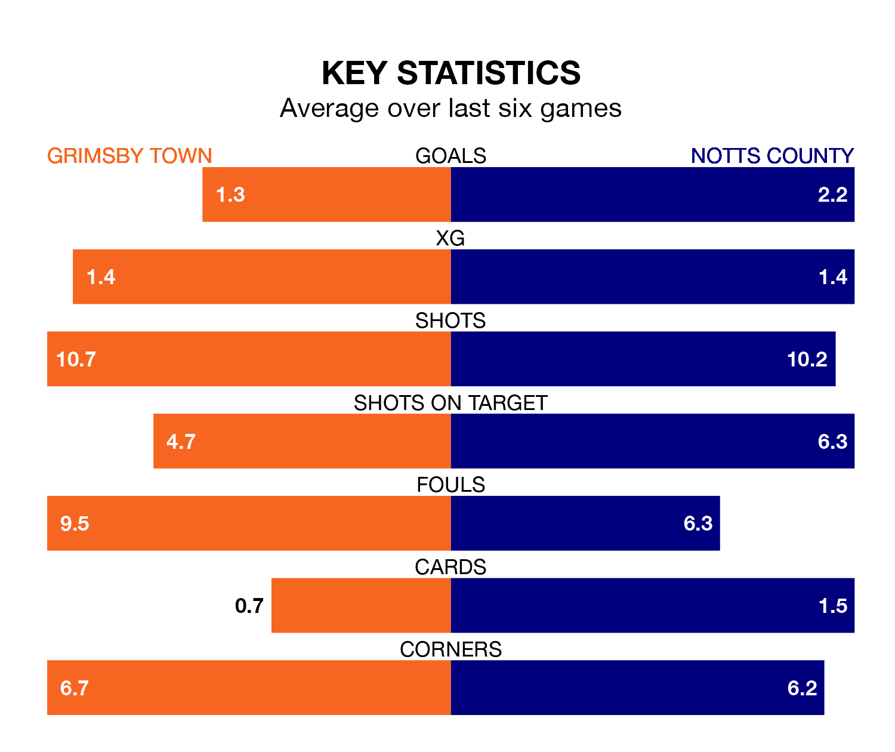

Notts County travel to Grimsby Town on Saturday in EFL League Two.
The visitors come into the game on the back of a defeat in their last match, having lost to Tranmere Rovers 4-2 away, with goals from Aaron Evans Nemane and Macaulay Langstaff.
The Mariners also lost their last match, 6-1 against Walsall, with their goal scored by Danny Rose.
With 55 goals in 26 games so far this season, County are the league's highest scorers with 2.1 goals per game. But they are conceding more than average too, letting in 47 goals at a rate of 1.8 per game.
Grimsby, meanwhile, are below average scorers, with 1.3 goals per game, compared to a league average of 1.5. They have conceded 1.7 goals per game.
In Langstaff, the away side have the league's sharpest shooter so far this season. He has notched 19 goals in 26 appearances.
His goal rate of one every 119 minutes is quicker than that of Rose, Town's top scorer with a goal every 226 minutes, and a total of nine goals in 23 games.
The Mariners are 20th in the table after 26 games, of which they have won six and drawn nine, earning 27 points.
County are 14 places ahead of the hosts in sixth, with 13 wins and three draws putting them on 42 points.
Grimsby are in mixed form in EFL League Two, with two wins and a draw from their last six games.
With two wins and four losses over that period, County's form is slightly worse – they have taken six points from 18, compared to Grimsby's seven.
In the last five years, Grimsby and County have played each other on five occasions. Grimsby won two of them and County three.
On average, the Mariners scored 1.4 goals and County 1.6 in those matches.
Their last meeting was on August 12, when County won 3-2 at home.
Saturday's match will be refereed by Craig Hicks, who has taken charge of two EFL League Two games so far this season, issuing no red cards and booking six players. He has not awarded any penalties.
He is yet to oversee a match featuring either Grimsby or County this season.
Updated: 13:38 (UTC), 10/01/24